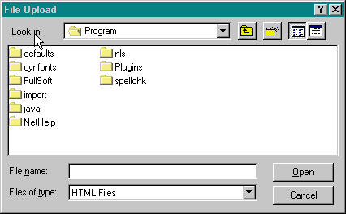
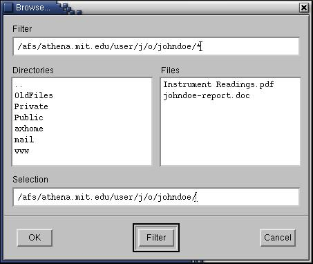

Home |Browse | Search | Communities | Collections | Submit | My DSpace | Edit Profile
DSpace captures, distributes and preserves MIT's digital research products. Here you can find articles, working papers, preprints, technical reports, conference papers and data sets in various digital formats. Our content grows daily as new communities and collections are added to DSpace.
The DSpace content is organized around Communities which correspond to MIT administrative entities such as schools, departments, labs and research centers. Within each community there can be an unlimited number of collections. Within each collection there can be an unlimited number of items.
Browse allows you to go through a list of items in some specified order:
Browse by Community/Collection takes you through the communities in alphabetical order and allows you to see the collections within each community.
Browse by Title allows you to move through an alphabical list of titles of all items in DSpace in alphabetical order.
Browse by Author allows you to move through an alphabetical list of all authors of items in DSpace.
Browse by Date allows you to move through a list of all items in DSpace in reverse chronological order.
Members are currently those people who either have authorization to submit items to DSpace or who have some capacity to work with the submissions within a community or collection. In the future there will be another membership category offering services such as e-mail notification when new items are added to a collection or community.
Submit is the DSpace function that enables MIT users to add an item to DSpace. The process of submission includes filling out information about the item on a metadata form and uploading the file(s) comprising the digital item. Each community sets its own submission policy. See The Inessential Guide to Submitting Items into DSpace for an introduction to this process.
My DSpace is a personal page that is maintained for each member. This page can contain a list of items that are in the submission process for a particular member, or a task list of items that need attention such as editing, reviewing, or checking. In the future this page will also maintain information about personal services offered by DSpace, such as e-mail notification when new items are added to a collection.
Edit Profile allows you to change your password.
About takes you to information about the DSpace project and its development.
To search all of DSpace, use the yellow search box at the top of the navigation bar on the left (or the search box in the middle of the home page)
To limit your search to a specific community or collection, navigate to that community or collection and use the search bar on that page.

DSpace uses the Jakarta Lucene search engine. Here are some search hints:
What is searched
The word(s) you enter in the search box will be searched against the title, author, keyword and abstract fields of each item's record.What is not searched - Stop Words
The search engine ignores certain words that occurr frequently in English, but do not add value to the search. These are:"a", "and" , "are" , "as" , "at" , "be" , "but" , "by" , "for" , "if" , "in" , "into",
"is" ,"it" ,"no" , "not" , "of" , "on" , "or" , "such", "the" , "to" , "was"
Truncation
Use an asterisk (*) after a word stem to get all hits having words starting with that root, for example:
will retrieve selects, selector, selectman, selecting.
Stemming
The search engine automatically expands words with common endings to include plurals, past tenses ...etc.Phrase Searching
To search using multiple words as a phrase, put quotation marks (") around the phrase.

Exact word match
Put a plus (+) sign before a word if it MUST appear in the search result. For instance, in the following search the word "training" is optional, but the word "dog" must be in the result.
Eliminate items with unwanted words
Put a minus (-) sign before a word if it should not appear in the search results. Alternatively, you can use NOT. This can limit your search to eliminate unwanted hits. For instance, in the search
or
you will get items containing the word "training", except those that also contain the word "cat".
Boolean searching
The following Boolean operators can be used to combine terms. Note that they must be CAPITALIZED !
AND - to limit searches to find items containing all words or phrases combined with this operator, e.g.
will retrieve all items that contain BOTH the words "cats" and "dogs".
OR - to enlarge searches to find items containing any of the words or phrases surrounding this operator
will retrieve all items that contain EITHER the words "cats" or "dogs".
NOT - to exclude items containing the word following this operator, e.g.
will retrieve all items that contain the word "training" EXCEPT those also containing the word "cat".
Parentheses can be used in the search query to group search terms into sets, and operators can then be applied to the whole set, e.g.

The DSpace content is organized around Communities which correspond to MIT administrative entities such as schools, departments, labs and research centers. Within each community there can be an unlimited number of collections. Within each collection there can be an unlimited number of items. This organization gives DSpace the flexibility to accomodate differing needs of communities by allowing them to
Each community has its own entry page displaying information, news and links reflecting the interests of that community, as well as a descriptive list of collections within the community.
Communities can maintain an unlimited number of collections in DSpace. Collections can be organized around a topic, or by type of information (such as working papers or datasets) or by any other sorting method a community finds useful in organizing its digital items. Collections can have different policies and workflows.
Each DSpace collection has its own entry page displaying information, news and links reflecting the interests of users of that collection.
When you access an area of DSpace that requires authorization, the system will require you to log in.
If you are an MIT user, you will need to log in using your MIT Web certificate. If you do not have one, please see MIT Information Systems Web Certificates at MIT for instructions on how to get one. You will be prompted by your browser to supply your Web certificate. Make sure the correct certificate is selected and click "OK" or "Continue". The name of the certificate should look like this:
John Doe's Massachusetts Institute of Technology ID
If you are not an MIT user, you will need to have been given an account by the DSpace administrators. When you need to log in, cancel the certificate dialog box that may appear. Before you log in for the first time, you will need to click on "register with DSpace" and follow the instructions. After that, you will need to enter your e-mail address and password in the log-in form that appears. Your e-mail address should include your username and domain name. It is not case sensitive.
Example: moniker@mycorp.com
Type your password exactly as you entered it originally. It is case sensitive. Be sure to click on the "log in" button to continue.
If you can't get to the log in screen you can access it directly by clicking here and bookmarking that page.
Stopping during the Submission Process:
At any point in the submission process you can stop and save your work for a later date by clicking on the "cancel/save" button at the bottom of the page. The data you have already entered will be stored until you come back to the submission, and you will be reminded on your "My DSpace" page that you have a submission in process. If somehow you accidentally exit from the submit process, you can can always resume from your "My DSpace" page. You can also cancel your submission at any point.
Progress Bar - Oval Buttons at Top of Page:
At the top of the submit pages you will find 7 oval buttons representing each step in the submission process. As you move through the process these ovals will change color. Once you have started you can also use these buttons to move back and forth within the submission process by clicking on them. You will not lose data by moving back and forth.

Select Collection:
Click on the arrow at the right of the drop-down box to see a list of Collections. Move your mouse to the collection into which you wish to add your item and click.
(If you are denied permission to submit to the collection you choose, please contact dspace-help@mit.edu for more information.)
You must be authorized by a community to submit items to a collection. If you would like to submit an item to DSpace, but don't see an appropriate community, please contact us at dspace-help@mit.edu to find out how you can get your community set up in DSpace.
Click on the "next" button to proceed, or "cancel/save" button to stop and save or cancel your submission.
If you respond "yes" to any of the questions on this page, you will be presented with a modified input form tailored to capture extra information. Otherwise you will get the "regular" input form.
* More than one title - Sometimes an item has more than one title, perhaps an abbreviation, acronym, or a title in another language. If this is the case, and you want this information captured, click in the "yes" box.
* Previously issued - New items that have NOT been previously published or distributed will be assigned an issue date by the system upon DSpace distribution. If you are entering older items that have already been distributed or published, click in the "yes" box.
* Multiple files - An item can consist of more than one file in DSpace. An example of this would be an article containing a text file and a video simulation and a data file. If you are submitting more than one file for this item, click in the "yes" box.
* Theses - We currently do not accept individual thesis submissions in DSpace; see Submitting an Electronic Thesis at MIT for instructions for using the Electronic Thesis system managed by Libraries and MIT IS. Clicking this box will cancel an active submission and provide a more detailed version of this explanation.
Click on the "next" button to proceed, or "cancel/save" button to stop and save or cancel your submission.
The information you fill in on these two screens will form the metadata record that will enable users to retrieve your item using search engines. The richer the metadata, the more "findable" your item will be, so please take the time to fill in as many fields as are applicable to your item.
Author:
This can be a person, organization or service responsible for creating or contributing to the content of the item. By clicking on the "Add More" button you can add as many authors as needed. Examples:
If the author is an organization, use the last name input box for the organization name:
Title:
Enter the full and proper name by which this item should be known. All DSpace items must have a title!
Other Title: (note - this input box appears only if you indicated on the first page that the item has more than one title.)If your item has a valid alternative title, for instance, a title in another language or an abbreviation, then enter it here. Example:
Date of Issue: (note - this input box appears only if you indicated on the first page that the item has been previously published or distributed. If DSpace is the first means of distribution of this item, a date will be assigned by the system when the item becomes a part of the repository.)
If your item was previously published or made public, enter the date of that event here. If you don't know the month, leave the default "no month"; otherwise select a month from the drop-down box. If you don't know the exact day, leave that box empty.
Series/Report No.:
Some of the collections in DSpace are numbered series such as technical reports or working papers. If this collection falls into that category, then there should be a default value in the Series Name box which you should not change, but you will have to fill in the assigned number in the Report or Paper No. input box. Examples:
Identifiers:
If you know of a unique number or code that identifies this item in some system, please enter it here. Click on the down area next to the input box, and select one of the choices in the drop down menu. The choices refer to:
Govt.doc # - Government Document Number - eg. NASA SP 8084
ISBN - International Standard Book Number - eg. 0-1234-5678-9
ISSN - International Standard Serial Number - eg. 1234-5678
ISMN - International Standard Music Number - eg. M-53001-001-3
URI - Universal Resource Identifier - eg. http://www.dspace.org/help/submit.html
Other - An unique identifier assigned to the item using a system other than the above
Language:
Select the language of the intellectual content of your item. If the default (English - United States) is not appropriate, click on the arrow on the right of the drop down box to see a list of languages commonly used forMIT publications, eg.
If your item is not a text document and language is not applicable as description, then select the N/A choice.
Click on the "next" button to proceed, or "cancel/save" button to stop and save or cancel your submission.
Subject/Keywords:
Please enter as many subject keywords as are appropriate to describe this item, from the general to the specific. The more words you provide, the more likely it is that users will find this item in their searches. Use one input box for each subject word or phrase. You can get more input boxes by clicking on the "add more" button. Examples:

Your community may suggest the use of a specific vocabulary, taxonomy, or thesaurus. If this is the case, please select your subject words from that list. Future versions of DSpace will provide links to those lists.
Abstract:
You can either cut and paste an abstract into this box, or you can type in the abstract. There is no limit to the length of the abstract. We urge you to include an abstract for the convenience of end-users and to enhance search and retrieval capabilities.
Sponsors:
If your item is the product of sponsored research, you can provide information about the sponsor(s) here. This is a free-form field where you can enter any note you like. Example:

Description:
Here you can enter any other information describing the item you are submitting or comments that may be of interest to users of the item.
Click on the "next" button to proceed, or "cancel/save" button to stop and save or cancel your submission.
There are two methods of entering the name of the file you wish to upload:
Type the full path and file name into the input box and then click on the "upload file" button in the lower right hand corner of the screen.
Click on the "browse" button and a window showing your files will appear. You can navigate through your directories and folders until you find the correct file to upload. Double-click on the file name you wish to upload, and the name will be entered into the input box.
Note: If you are using the Netscape browser, the default file type will be set to "HTML files", so you may not see all of your files. Here is how to see all your files:
On Windows and Macintosh computers, the window initially looks like this:

Click on the drop down arrow next to the "HTML Files" and select "All Files (*.*)":

On Athena workstations and other UNIX systems, the window initially looks like this:

Click to the right of the "*.html" in the top text box, and remove the ".html" with the backspace key, but leave the "*". Then, click on the "Filter" button at the bottom of the window. You will then see all of your files, like this:

Once the correct file name is in the input box, click on the "upload" button to proceed.
If you specified at the beginning of the submit process that you had more than one file to upload for this item, you will see an input box marked "File Description". The information you provide here will help users to understand what information is in each file, for instance, "main article" or "images" or "computer program" or "data set". Once this information is entered, click on the "upload" button to proceed.
To properly archive and give access to a file, we need to know what format it is, for example "PDF", "HTML", or "Microsoft Word". If the system does not automatically recognize the format of the file you have uploaded, you will be asked to describe it. If the format of the file appears in the list offered, click on it and then on "Submit". If you can't see the format in the list, click on "format not in list" and describe the format in the text box lower down on the page. Be sure to give the name of the application you used to create the file and the version of that application, for example "Autodesk AutoCAD R20 for UNIX".
More information about file formats, including our policy for supporting specific formats and what our policy means for your files, is available in DSpace Supported Formats.
After you have uploaded a file, check the information in the table to make sure it is correct. There are two further ways to verify that your files have been uploaded correctly:
If you're only uploading one file, click on "Next" when you're happy that the file has been uploaded correctly.
If you're uploading more than one file, click on the "Upload Another File" button. When you are satisfied that all files for this item have been successfully uploaded, click on the "Finished Uploading Files" button.
DSpace generates an MD5 checksum for every file it stores; we use this checksum internally to verify the integrity of files over time (a file's checksum shouldn't change). You can use this checksum to be sure what we've received is indeed the file you've uploaded.
To do this, click "Show checksums" on the "Uploaded File" page. The DSpace-generated MD5 checksum for every file we've received from you will show to the right of the filename.
You will need to use a local program to generate your own checksum for these files, and verify that your results match ours. On most UNIX-like systems (including athena and Mac OS X), use md5sum. For instance, type "md5sum MYFILE" for every file you want to check; the summary should print on your screen.
For Windows machines, MD5 tools are freely available: try md5 (from http://www.fourmilab.ch/md5/), or md5sum, available via the textutils package in Cygwin (http://www.cygwin.com/).
All of these utilities will need to be run from a command-line, or terminal, window. The entire digest printed out when you run the md5 tool on your local copy of the file you're uploading should be exactly equal to what DSpace reports.
This page lets you review the information you have entered to describe the item. To correct or edit information, click on the corresponding button on the right, or use the oval buttons in the progress bar at the top of the page to move around the submission pages. When you are satisfied that the submission is in order, click on the "Everything is Correct" button to continue.
Click on the "Cancel/Save" button to stop and save your data, or to cancel your submission.
DSpace requires agreement to this non-exclusive distribution license before your item can appear on DSpace. Please read the license carefully. If you have any questions, please contact us by e-mail: dspace-help@mit.edu or telephone: 617-452-3485.
Now that your submission has been successfully entered into the DSpace system, it will go through the workflow process designated for the collection to which you are submitting. Some collections require the submission to go through editing or review steps, while others may immediately accept the submission. You will receive e-mail notification as soon as your item has become a part of the collection, or if for some reason there is a problem with your submission. If you have questions about the workflow procedures for a particular collection, please contact the community responsible for the collection directly. You can check on the status of your submission by going to the My DSpace page.
When your item becomes a part of the DSpace repository it is assigned a persistent URL. This means that, unlike most URLs, this identifier will not have to be changed when the system migrates to new hardware, or when changes are made to the system. DSpace (through MIT Libraries) is committed to maintaining the integrity of this identifier so that you can safely use it to refer to your item when citing it in publications or other communications. Our persistent urls are registered with the Handle System, a comprehensive system for assigning, managing, and resolving persistent identifiers, known as "handles," for digital objects and other resources on the Internet. The Handle System is administered by the Corporation for National Research Initiatives (CNRI), which undertakes, fosters, and promotes research in the public interest.
If you are an authorized DSpace submitter, or if you are a staff member responsible for DSpace collection or metadata maintenance, you will have a My DSpace page. Here you will find:
This page allows you to change the information we have for you. You must be authenticated either by MIT certificate or with your log-in to change any of your personal information.
Home |Browse | Search | Communities | Collections | Submit | My DSpace | Edit Profile
For further assistance, send e-mail to dspace-help@mit.edu or call 617-452-3485.